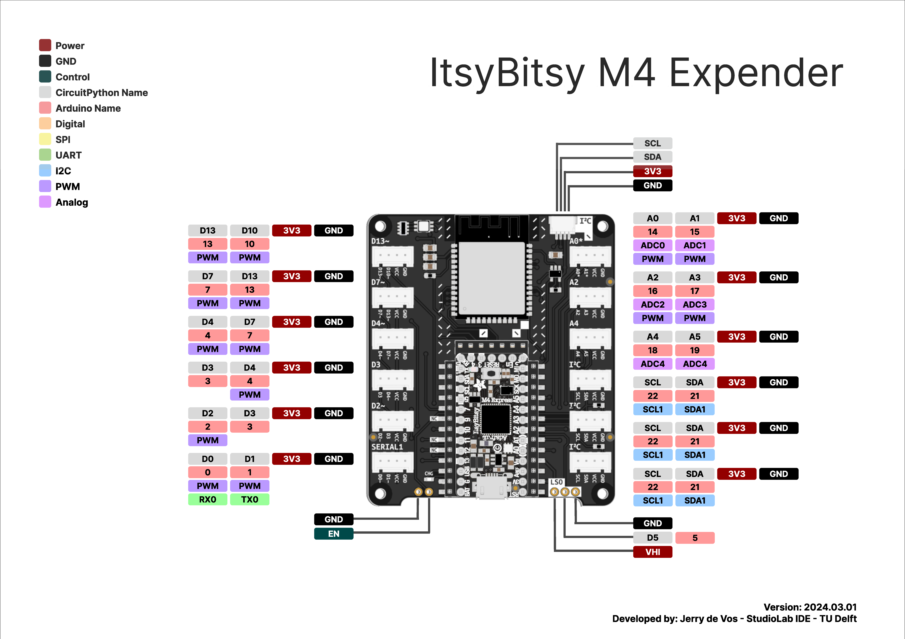

Skip to main content
Link
Menu
Expand
(external link)
Document
Search
Copy
Copied
Connected Interaction Kit
Home
Tutorials
Preparation
Tools and Equipment
Installing Mu Editor
Let There Be Light!
Part 1 - Load the program code using Mu Editor
Part 2 - Change the way your ItsyBitsy behaves
Adding Inputs and Outputs
Part 1 - Add an Input Component
Part 2 - Add an Output Component
Connecting To The Internet
Part 1 - Scan for Available Networks
Part 2 - Register Your Device for Use on Campus
Part 3 - Connect to a WiFi Network
Assembling Custom Components
Before you Begin...
Rotary Potentiometer
Tactile Switch
Tilt Switch
Thermistor
Photoresistor
Components
Core Components
ItsyBitsy
Bitsy Expander
Solderless Components
Servo Motor
Touch Sensor
Piezo Buzzer
Vibration Motor
Sound Sensor
Chainable LED
Time of Flight Sensor
LED Pack
Custom Components
Tactile switch
Rotary potentiometer
Photoresistor
Tilt switch
Thermistor
Advanced Components
Basic Radar Sensor
Advanced Radar Sensor
Motor Driver
Big chainable LED
Accessories
Breadboard
Glossary
Getting help
Digital Interfaces
CircuitPython Docs
Getting help
Pinouts
Pinouts
Pinout for the Itsy Bitsy M4
Original
Pinout for the Itsy Bitsy M4 in the Expander

Original
Pinout for the Itsy Bitsy RP2040
Original
Pinout for the Itsy Bitsy RP2040 in the Extender
Original